你真的会学习吗？
📌阅读引导
本文字数6800+
据说坚持看完的人
外面看不到
📌正文开始
未来学家库兹韦尔有一个特别有意思的概念，叫做「吓尿指数」，什么意思呢？
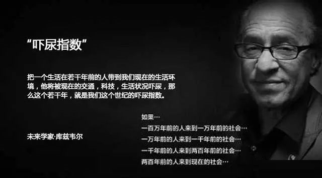
就是把一个生活在若干年前的人带到我们现在的生活环境，他将被现在的交通、科技、生活状况给吓尿，那么这个「若干年」就是我们这个世纪的「吓尿指数」。
比如，将一万年前，刚刚会使用火的智人，带到1000年前的宋朝，他就会被那时候富丽堂皇的宫殿，绚丽夺目的服饰，人们生活所使用的各种器具给吓尿；
再比如，将200年前的嘉庆皇帝，带到如今的时代，他会被满街的汽车，天上的飞机，每个人手中的手机，甚至是机器人，VR，AR等各种高科技给吓尿….
但是，他们为什么会吓尿呢？是因为看到太先进的科技，害怕了吗？
你设想一下100年后的世界：
我们可能都活在一个虚拟世界里，每天在玩游戏；
我们和机器人共同生活，他们已长得和我们一样；
我们和机器人甚至结合在了一起，并且可以永生；
我们能轻易的进行太空旅行，生活在多个星球上；
我们把科幻电影里看到的场景，都搬到了现实中…

但，面对这样的场景，你真的会被吓尿吗？
我看未必！
你可能会说：哇，好腻害，和电影中的一样呢~
可为什么说200年前的人，如果穿越到今天，肯定会被吓尿呢？
那是因为他的知识结构，和眼前的这个世界，断层了！
什么意思？
刚才说的这些高科技，我们可能从未亲眼见过，只是电影里看到，或者是脑海里想象出来的，但是我们至少能理解他们。
无非就是人工智能更先进了，用上了更快的网络，万物互联了，虚拟世界和物理世界融合了，发现了新材料，航天技术得到了空前的发展…
而200年前的嘉庆皇帝，如果来到今天，他可能完全无法理解眼前的这个世界…
你告诉他这个叫手机，那个叫ipad，路上跑的叫汽车，手机里说话的那个女人叫Siri…
他完全无法理解，甚至都听不懂你说的普通话…
那怎么办呢？
有什么办法可以让嘉庆皇帝他老人家，学习、理解我们这个世界呢？
为了回答这个问题，我们先来看一下「学习」这个过程，到底是如何完成的？
📌学习是如何完成的？
比如你看了一篇文章，读了一本书，听了一场讲座，你感觉收获很大；或者你通过不断练习学会了游泳…
这份感受与收获，以及学会的游泳姿势，到底在你的大脑里到底发生了什么变化？
是多出来一些细胞吗？还是细胞的样子发生了改变？
如果都没变化，那这些新的知识和技能，是如何储存在你大脑中的呢？
著名心理学家巴甫洛夫，曾经用狗狗做了一个实验，来研究这个学习的过程：
饲养员每次给小狗送食物的时候，小狗都会流口水，这个当然并不奇怪。但是时间一长，当饲养员刚打开门，还没有进来，狗粮还没有出现的时候，小狗就已经开始流口水了…
这就有点奇怪了，「开门」和「狗粮」这两个完全不相关的事物，为什么让小狗产生了同样的反应？
巴甫洛夫就猜想，是不是因为「狗粮、开门、饲养员」这几件事总是同时出现，慢慢的，小狗就将他们联系到了一起，当「开门」这个事件发生，小狗就认为「狗粮」马上就要出现？这不就是学习吗？
于是，为了进一步验证这个猜想，巴甫洛夫开始测试其他的方式，分别使用铃铛、口哨、音乐、一句特定的话等和「狗粮」一起出现…
结果，这些都能让这这只可怜的小狗开始分泌唾液…这证明小狗确实会学习！
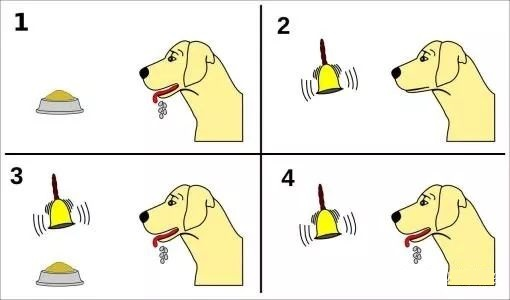
这个「巴甫洛夫的狗」的著名实验，似乎触及到了学习的本质：所谓学习，就是把原本不相关的东西联系在一起的过程。
这个说法有科学依据吗？学习在大脑中又是如何发生的呢？
几十年后，心理学家赫布，提出了解释该现象的理论模型：如果大脑里两个神经细胞总是被同时激发，那他们之间的连接就会变得更强。而这个时候，如果再激发其中一个细胞，那么另外一个细胞，就会被同时激发。
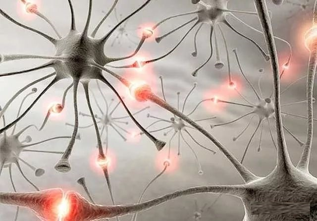
这个就是著名的「赫布定律」，他的这个猜想也在之后的科学实验中被证实。
可能这样说，你还是不太能理解，这就像2个素不相识的男女，在公司活动中经常被安排在一起做活动，他们两人之间的连接就会被加强，然后成为朋友，甚至产生爱慕，最终走到一起。
所以，学习的过程，并不是我们通常认为的，是将虚拟的知识存入到大脑里的这样一个过程。而是将不同事物彼此联系到一起，并在大脑中产生与之相对应的神经细胞之间的连接强度的变化。
比如，你眼前放了一个「纸袋」，今天是你第一次见到它，在没有其他人给你解释的情况下，请问你是如何理解它的？
你大脑里会凭空冒出来一个概念叫做「纸袋」吗？
不会。
我猜你理解它的过程大致是这样的：
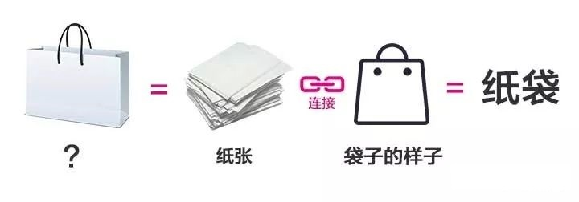
看，我们理解一个新事物的过程，并不是凭空冒出来一个概念的，而是找到已有的相关概念，并把它们连接起来，组合成一个新概念。
如果我们把这个过程再往下推，看看是不是这样的：
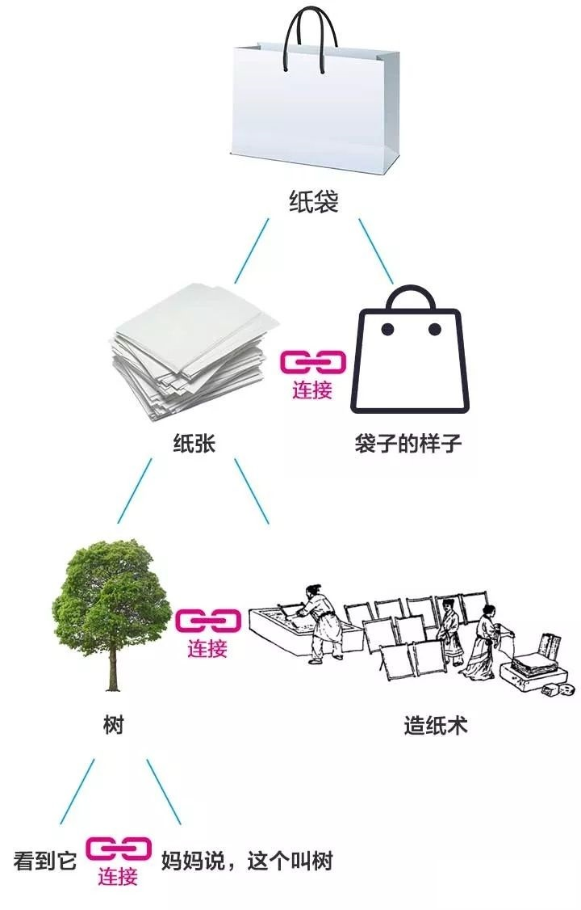
同样的，你还可以试试其他事物，回忆一下，你学会它的过程是不是也发生了类似的连接？
学习的过程，其实就是建立新连接的过程。可以连接已有的概念，也可以连接你看到的、听到的、闻到的某个信息。
我们经常说某个人口才好，能把一个复杂的概念讲明白，那一定是因为这个人用了一个你熟悉的概念作为起点，帮助你连接到这个新概念上，这样你就能一下子听明白了。
我们回到开头说的问题，为什么会有吓尿指数？
200年前的嘉庆皇帝来到今天这个社会，为什么会被吓尿呢？
你把一个iPhone手机放在他的面前，他会怎么理解它？
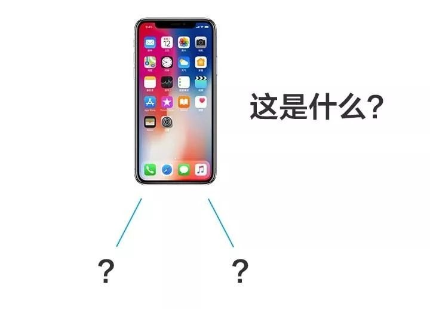
玻璃？瓷器？铁器？铜器？画？西洋文？
这个画怎么会自己动呢？谁在讲话？
匪夷所思…
他已经找不到该用什么「原有知识」来理解它了！
并不仅仅是我们现在的科技进步了，而是我们现在用的产品，所使用的「技术要素」已经完全脱离了他当时的知识存量，知识结构发生了断层，导致他找不到可连接的点，现实变成了他不能理解的梦境空间…
人是在已有认知上，建立新的连接，来理解新事物的。
如果缺少了相关的背景知识就无法理解眼前这件事。反过来说，如果你的知识存量越多，你能理解的新知识也就越多，理解速度会越快，这就是我们看书会越看越快的原因。
我们在上节课留了一个尾巴，就是学习的第三步「提取使用」没有讲。
结尾的时候我说：如果知识没有「用」，就「没有用」，其实说起来，这是一句正确的废话，因为这个道理大家都懂。
可关键是，我们为什么会「不用」？
这不是很奇怪嘛！
如果将来不会用，我们干嘛要学习？
我们辛辛苦苦学知识，是为了显得自己很有学问吗？
还是显得自己很努力？很爱学习？
都不是吧！
为了通过考试？
确实，国人很多小伙伴都是因此而学习的，比如有些同学高考结束后，就把书给扔了、烧了…

为什么会这样？
因为他们都把学习当成了「目的」本身。
高考结束，大学毕业，或者考证通过，就是这个目的的「终点」，一旦跨过终点，我为什么还要学习？考完之后，我为什么还要用这些知识？
目的已经达到啦，书和知识当然可以扔了啊！
很多时候，我们很多人，都在为了学习而学习，为了考试而学习，全然忘记了学习的真正目的！
学了不用，是因为把学习的目的搞错了！
那学习的真正目的是什么？
学习知识，是为了能更高效的解决问题！
目标错了，姿势怎么可能正确？
就像基于「地心说」发展出来的任何理论，都不可能正确！
如果目标变成了「解决问题」，那么「学习」就变成了过程，「知识」就变成了解决问题的「要素」。
那么，只要你在生活、工作中依然需要面对问题，学习就不会停止！只要问题需要被解决，你为此学到的知识，就一定会被使用！
这就是我们常听到的「带着问题去学习」，这句话竟然还被当成了金玉良言，这不应该是理所当然的嘛！不带着问题去学习才是「动机不纯」嘞！
那我们该如何「使用知识」来「解决问题」呢？
比如，问题：7×8=？
你会如何解决这个问题？
摆一个7行8列的点阵，然后数一下有几个点？
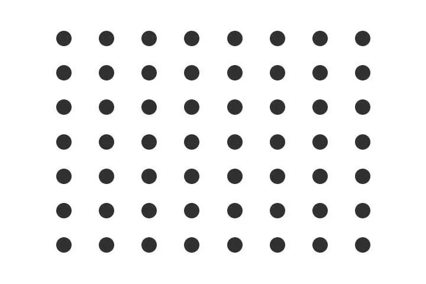
哪怕你用的是这种方式，还得有个前提：
就是你得看得懂「7、8」这两个数字；
得看得懂「×」这个符号代表什么意思；
还得知道用「行、列」组成的点阵来解决乘法的问题；
这些数字、符号代表的意思，就是「知识」，没有这些知识，你连题目都看不懂…
当然，如果你在小学背过「乘法口诀表」，你根本不需要搞这个点阵图，直接可以写出答案：56。
这个「乘法口诀表」就是知识。
刚才这个过程，就是解决这个问题的「思考过程」，我们发现，拥有不同「背景知识」的人，思考这个问题的过程和方法、速度是不一样的：
看不懂数字和符号的人：一脸懵逼；
看得懂数字和符号，但是不会乘法口诀的人：列出点阵图，一个个数；
会乘法口诀表的人：瞬间给出答案！
所以，知识是如何帮助你解决问题的？
「知识」并不是直接解决问题的，而是提高了你解决这个问题的「思考质量」！
这样，一个清晰地脉络就浮现在我们眼前：
所以，学习的真正目的，是为了提高「思考质量」！
这是一个非常重要的转变！
什么意思？
原来，学习是你的目标，现在目标变成了「如何提高思考质量」，「学习知识」变成了达成这个目标的一个关键步骤！
目标不同，姿势当然就会有变化！
那么，我们应该如何通过学习，提高思考质量呢？
首先，你得先了解一下，「思考」到底是一个怎么样的过程..
📌思考是怎么回事？
我们回到前面「7×8=？」这个问题，你再回忆一下，刚才你是如何思考的？
1. 看不懂，一脸懵
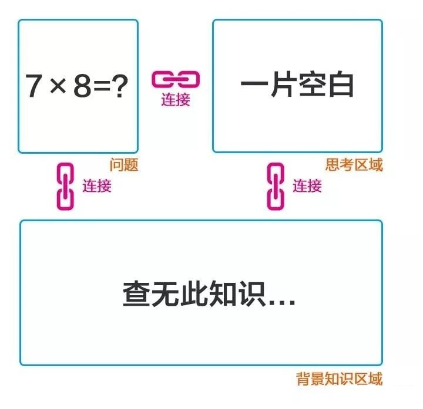
2. 看懂了，列成点阵图，然后一个个数
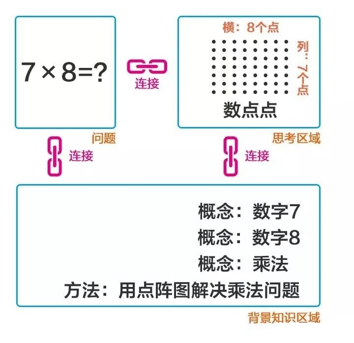
3. 「背」答案
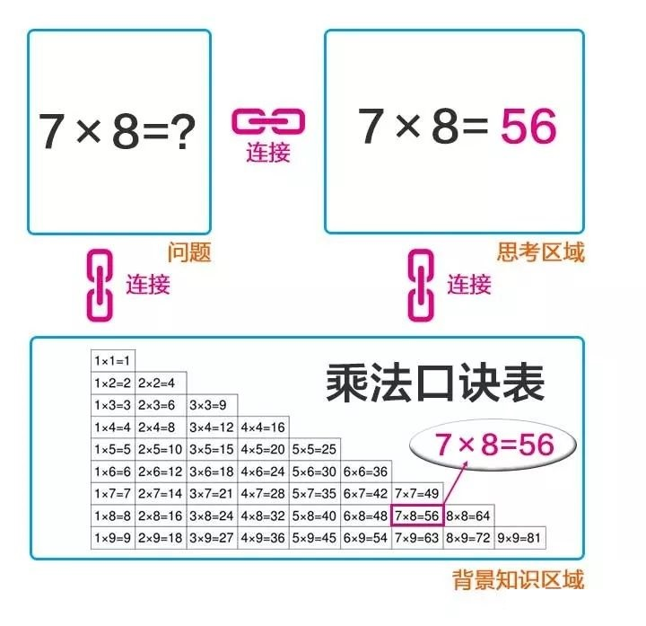
这答案是计算出来的吗？
不是！
是在记忆中找到的！
我们再来看一个问题：
问题：我产品做出来了，该如何做宣传？
思考1：背景知识中，没有「宣传」这个概念…
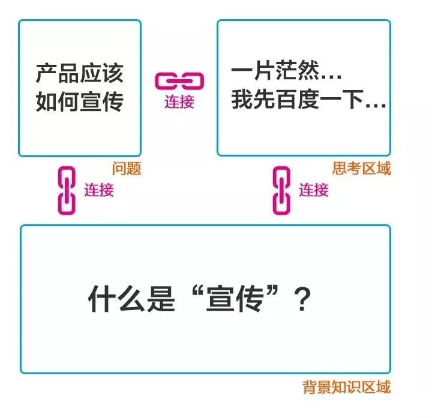
思考2：冒出很多相关信息…
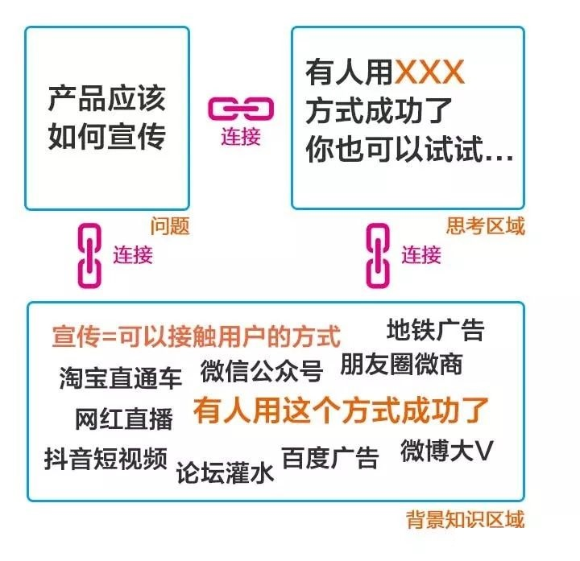
一想到宣传，脑子里就蹦出非常多成功案例：
朋友圈做微商吧，宣传效果好，我一个朋友现在辞职干这个，一个月几万块洒洒水…
做淘宝直通车吧，虽然费用不小，但是流量稳定啊，有人就靠直通车，一个月赚几十万呢…
开微信公众号吧，先发发文章，等粉丝有了，想宣传什么宣传什么，有人用公众号月入100万…
做抖音短视频吧，最近可火了，当下风口，流量超多，有人用这个方式赚大钱了，这就是10年前的淘宝啊…
….
思考3：拥有一个有关宣传的「方法论」
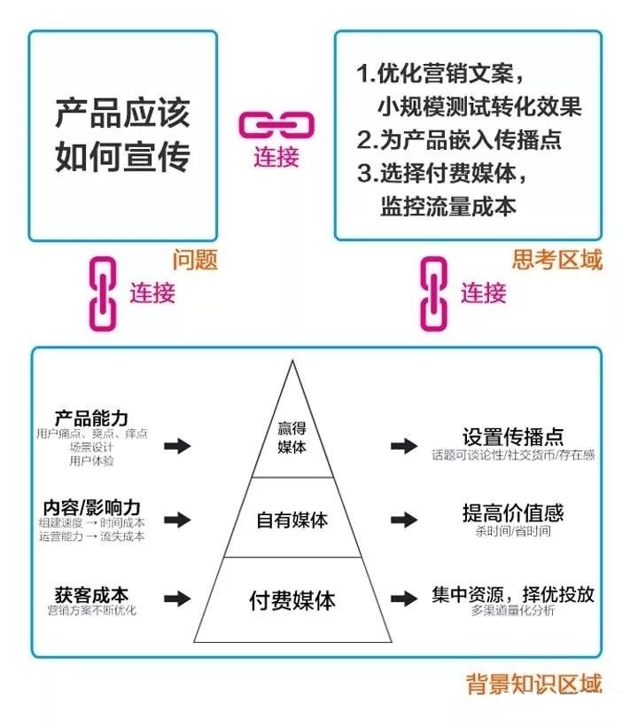
产品做宣传，可以从3个方面来考虑：
营销文案：投放渠道之前，你应该先把时间花在设计一个好文案上，它是你推广的核心，营销文案没写好，投再多广告都是打水漂；
选择适合自己的宣传渠道：宣传渠道有三类：付费媒体、自有媒体、赢得媒体，分别适用于土豪；网红和爆款产品，我们的产品体验非常棒，应该将投入重点放在赢得媒体，在产品中嵌入传播点，让朋友圈为我们刷屏！再拨一点预算，适当的投放一些付费媒体，提升短时间内的用户触达率；
计算流量成本：先小范围测试投放渠道，每日紧盯转化率、分享率等等数据，计算流量成本，找到更优质的投放渠道，加大投放力度…..
基于这些概念和方法论，可以展开一整套解决方案，这里就不做赘述了…（Enmmm…. 如果你没有相关的背景知识，可能这段方案，你并看不懂…）
这个方案，是思考得来的吗？
不是！
也是在记忆中找到的！
我们来看一下刚才的这些思考，具体经历了哪些步骤：
1. 连接相关背景知识
我们首先会根据问题，在自己的知识库中搜索相关的背景知识，可以是概念，方法论，或者别人的经验，或者自己的所见所闻的信息，也可以是其他行业的知识…
总之，在这个过程中，大脑中会冒出很多与问题相关的各种信息。
如果能连接到的背景信息很少，我们就无法有效的思考，甚至都不能理解题目的意思…
而你掌握的背景知识越多，可用于思考的要素就越多，最终给出的方案也会越全面。当别人还在理解问题的时候，你可能已经连接到一个方法论，并开始侃侃而谈了…
2. 梳理这些背景知识
想到的这些背景知识可能会很零碎，你需要结合问题，把他们重新排列组合一下，梳理成一条完整的信息，形成最终的结论。
这个梳理的过程包括筛选、整理、重组、缩放等等…
不管怎么样，这个结论都是基于你掌握的背景知识，重新组合起来的新应用，而不是凭空产生出来的空中楼阁。
人类的思考过程，看似无法捉摸，深入剖析，其实就这2步：
连接-背景知识
梳理-背景知识
你说不对啊，还有想象力啊，我们可以想想并不存在的东西。
真的是完全不存在吗？
我们所有的想象，都是基于已有知识的重新排列组合，或者某个特性的放大或缩小，比如：
- 狮身人面像，就是将人头和狮身重新组合在一起；
- 蜘蛛人，就是把蜘蛛的特性和人组合在一起，并放大了能力…
组合的要素，放大的基础，都是我们已有的认知。
太阳底下没有新鲜事，排列组合就是创新！
我们并不能想像一个完全脱离于自有认知的东西，就像200年前的康熙帝，不可能在200年前想象出iphone这么个玩意儿。
因此，当你拥有不同知识背景的时候，你的思考过程和结果，也会截然不同。
当别人还在思考问题中的名词是什么含义时，你已经开始给建议了；
当别人还在零碎的给建议时，你已经可以把完整方案抛出…
所以，思考的过程，有点像玩乐高积木，决定你思考质量的，一个是你拥有的积木数量和种类，一个是你拼接的技巧和创意。
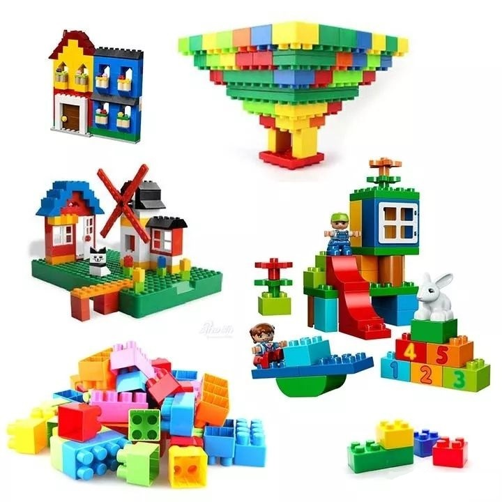
📌我们该如何提思考能力？
知道了我们的大脑是如何思考问题的，要提高思考能力就有了具体的方向：
1. 增加背景知识量
思考的基础是背景知识拥有量。
增加背景知识量，就是增加乐高积木里的积木数量和种类。
看似我们是在思考问题，其实大部分时间，我们是在回忆。
当你的大脑里没什么可连接的时候，大脑就会呈现出一片空白；你甚至连问题都看不懂，更谈不上思考了。
就像我让你用乐高积木拼出一个房子，可是你手上连一块积木都没有，你当然什么也搭不出来。而如果你掌握的背景知识量太少，你的思考就会比较片面，以偏概全；或者所有问题，都连接到一个方法论，比如用供需理论解释一切，这就像拿着一把锤子，眼里都是钉子…
所以，提高思考能力的第一步，并不是让大脑变得更聪明，而是增加自己的知识量。这并不是为了让你显得更有学问，而是帮助你在面对问题的时候，有足够的背景知识量可供你连接，让你拥有思考的「基石」。
2. 提高连接强度
连接强度，就是指熟悉程度，就像我让你用乐高积木搭出一个房子，你能瞬间想到需要用到哪些积木，而不需要在一大堆积木里，一个个比对，一次次尝试…
为什么有些专家，当你的问题刚抛出，他的答案也几乎可以马上脱口而出？
是他拥有一颗超级大脑吗？还是思考速度能快出天际？
并不是！
而是你的问题所需要用到的这些背景知识，对于他来说，已经成为了条件反射级的连接强度。
他需要做的只有一件事：根据你的问题，把瞬间出现在脑海中的解决方案说出来而已，根本用不到思考…
你无法那么迅速的找到相关的背景知识，当然也可以在自己的笔记本里查阅，通过搜索引擎寻找，但是那样效率太低，你资料还没收集齐全，对方已经开始执行方案了….
那我们该如何提高与背景知识的连接强度呢？
- 第一步：建立初次连接
学习的过程是连接，而不是记忆。
所以你每次学习了一个新概念、新方法，并不是把他背出来，或者存入收藏夹，而是让它和你的旧知识发生连接，用旧的知识来理解这个新概念，让这个新概念从你的原有知识里长出来。
比如，今天你学习了「背景知识」和「思考区域」这两个新概念，它们是什么意思呢？
不要死记硬背定义，那样很快就会忘记，因为没有发生连接，我们可以用我们熟悉的其他知识来理解它，比如电脑里的硬盘和内存：
「背景知识」就相当于电脑中「硬盘」里储存的信息，平时一般不用，等有个程序需要用到这个信息的时候，这个信息就会从「硬盘」进入到「内存」里进行工作，这个内存就是「思考区域」
你看，像这样，将两个原来并不相关的知识连接一下，是不是印象更深刻，也更容易理解了？
- 第二步：重复，再重复，形成条件反射级的连接
还记得开头我们讲的「巴甫洛夫的狗」的实验吗？
狗狗听见铃铛就流口水，并不是马上就能学会的，而是要铃铛和狗粮同时出现的成百上千次后，他们两者之前的连接才会被逐渐增强，最终变成了条件反射。
知识也是一样，经常用到某个知识，就会切实改变大脑中神经细胞彼此的连接强度，当强度到达一定程度后，就会呈现出条件反射级的连接。
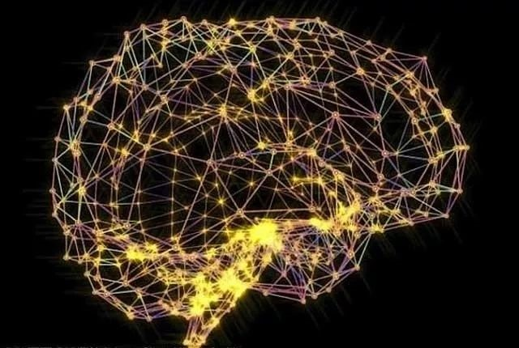
比如运动员，刻意训练某个动作，强化到一定程度，做动作就不需要再经过大脑。
比如说开车，向右转弯，要先打右转向灯，同时松离合，换挡，方向盘往右打，踩油门…如果你还在这样心里默念，那么你还在考驾照，如果你是个老司机，这个过程是不需要思考的。
3. 增强知识的结构性
关于结构化知识的好处上节课我们已经讲过，对于思考能力的提升，结构化的知识还有一个好处，就是当你联想到某个背景知识的时候，不是一个个想到的，而是一整片一整片，可以一次性拿到一串背景知识，甚至是一整套完整的方案，大大提高了你的思考效率。
比如：产品卖不出去怎么办？
别人能连接到的背景知识是：激励销售员、降价促销、增加广告投放渠道…等等这些零碎的点；
而你就可以直接连接到「企业能量模型」这个结构化的知识，然后分别从「产品、营销、渠道」这三个方向，九个常用解决方案里挑选几个适合的，几乎在瞬间给出一套完整的优化方案…
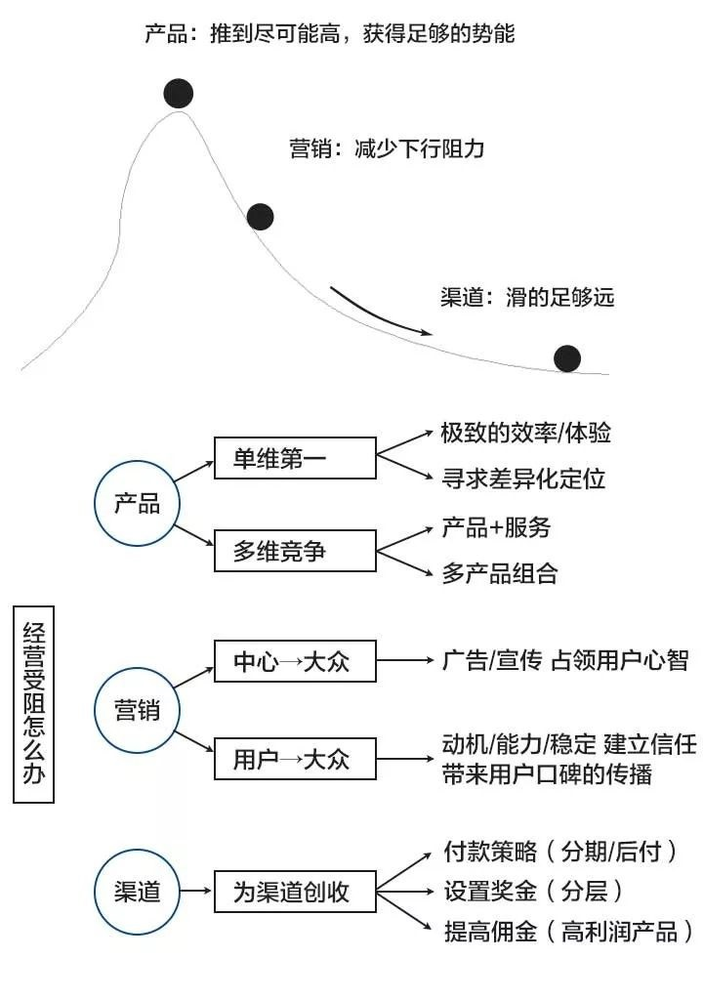
这就像让你用乐高积木搭房子，你不需要一个个寻找积木，再拼接他们了，直接就拿出一个拼好了的房子，简单调整一下即可…
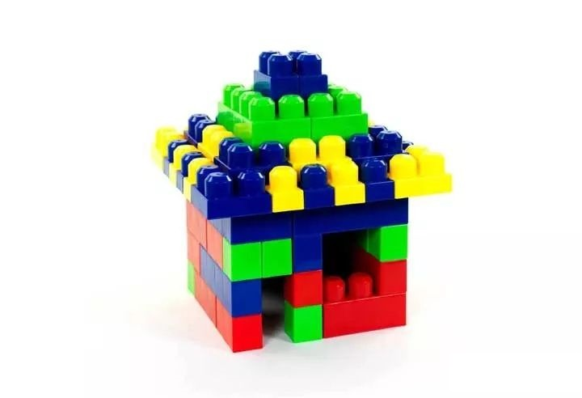
4. 提高对背景知识的梳理能力
有了这些背景知识，那么我们该如何做筛选、整理、重组、缩放等操作呢？
我们还是参考如何玩乐高积木（你看，我总是用乐高积木的案例，就是用熟悉的认知来理解新事物的方法，这样方便你理解和加深印象）
- 第一种方式：随意搭配
就是拿着这些积木，随意排列组合，没有什么规则，根据自己的喜好，想怎么搭就怎么搭。就像你面对问题，冒出了很多背景知识，你把他们随意的组合，就能产生一些不错的想法和建议。
这种方式往往可以用于创新，就是尝试把原本并不相关的几样东西，结合在一起，看看能不能组合出新的样貌，探索一些新的可能性，结果常常会出人意料。
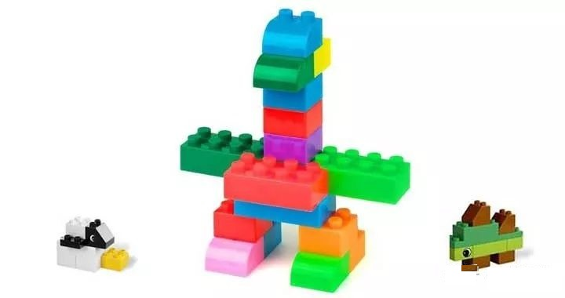
- 第二种方式：按套路搭配
就是你搭建的目标，是有一定规则和秩序的，比如你想搭一个房子，想搭一辆小汽车，在说明书上是有说明的，用哪几种积木，分别用多少，步骤是如何的，都写的很清楚，你按规定的步骤，一步步组合相关的积木，最终就能出现想要的房子、车子等。
在我们思考方法中，也有组合这些背景知识的各种套路说明书，比如：
整理背景知识的：MECE法则；
提升沟通效果的：SCQA结构化表达；
用于策略选择的：SWOT分析；
用于创新思考的：加减乘除排列组合；
….
这些都是已经成型的「思考说明书」，面对特定的问题，使用特定的步骤，重新组合背景知识，就能得到你想要的思考结果。
当你能够熟练的运用多种套路，并且熟悉每块积木的使用范围，那么下一步，你就能站在这些巨人的肩膀上，开始更有章法的创新，探索新的可能，设计出自己的艺术作品了。
对了，在梳理这些背景知识的时候，你还可以借助一些脑图工具：
比如Xmind，这能将你整理这些背景知识的过程可视化，提高你整理思维的效率。
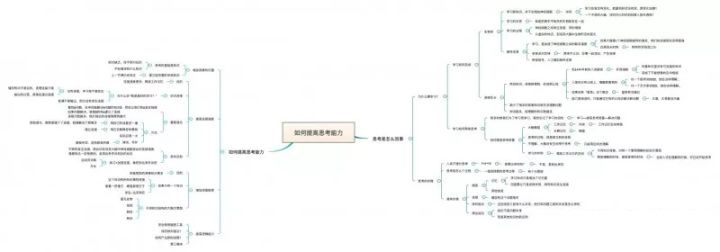
变聪明，并没有想象中那么难
所以，你看，如果你想提高自己的思考能力，想让自己变得更聪明一些，这其实并没有想象的那么难，你原来只是找不到提高的路径而已。
当你遇到问题没思路，大脑一片空白，不是因为你笨，只是因为你平时太懒了，没有足够的知识存量；学了许多知识却没有用，并不是因为知识对你没帮助，而是因为你只顾着记忆忘记连接了，没有连接，学习就不曾发生；没有连接，你的思考也无从开始。
当你有了足够的背景知识量，你与他们之间也能拥有了条件反射级的连接强度，那么在思考具体问题的时候，你已经比别人快出了一大截，别人还没理解的时候，你就已经开始梳理答案了…
那么，在梳理答案的过程中，又有哪些「思考说明书」可以帮助你提高思考效率的呢？
这个我们之后的课程再慢慢讲！
📌转载说明：
本文内容转载自知乎大V @谢春霖 – 如何提高思考能力？
据说坚持看完的人，就会获得原文章的地址：原文地址
如果喜欢，请点赞或打赏。
点赞，让更多的人也能看到这篇内容，去原文地址点赞（收藏不点赞，都是耍流氓 -_-）
谢谢你的支持！